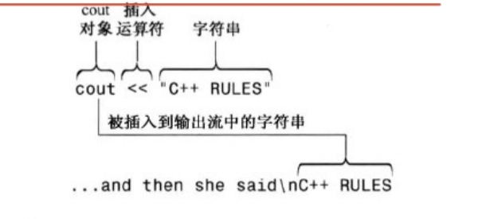

C++入门
C++简介
- C++是在C语言的基础上添加了面向对象编程和泛型编程的支持。
- C++继承了C语言高效、简洁、快速和可移植性的传统
- C++是C语言的超集，名称C++来自C语言中的递增运算符
++，所以它是C的扩充版本 -
接下来先简单介绍一下C++中对象的概念。说到面向对象我们先需要了解面向对象的三个基础概念，
类、属性、方法 -
类：主要就是一种规范，我们就拿字符串来举例。我们对字符串进行一种规范，把字符串划分为字符串类。这样我们就可以将字符串中相同点可以进行抽象。
属性：我们将类中的相同部分抽象出来就是作为属性。比如：字符串中共同部分有长度、地址等；方法：对相同类中的操作或者对一个类中的相同操作，我们就可以称为方法，方法可以理解为一个函数。例如：我们要合并两个字符串，我们就可以在这个类中定义一个专门进行这个操作的方法，对这两个对象进行操作- 总结：讲这一类东西进行规范，规范共同点、规范专门的操作，这就是面向对象的思想
C++源码
- 不同的操作系统，源代码文件的扩展名稍微有点不同，接下来介绍一下
| C++实现 | 源代码文件的扩展名 |
|---|---|
| UNIX | C、cc、cxx、c |
| GNU C++ | C、cc、cxx，Cpp、c++ |
| Digital Mars | cpp、cxx |
| Watcom | cpp |
| Microsoft Visual C++ | cpp、cxx、cc |
| Freestyle Code Warrior | cp、cpp、cc、cxx、c++ |
| Borland C++ | cp、cpp、cc、cxx、c++ |
-
编译和链接：
-
- 一开始利用一个C语言的前端，先会将C++源代码翻译成C语言源代码，然后再使用C语言编译器进行编译
- 后来随着C++的发展，才出现了专门的编译器可以将C++直接编译成二进制的机器码。
C++入门
- 接下来给出一个C++编写的两个模板，这个是第一个模板。
#include <iostream>
int main()
{
using namespace std;
return 0;
}
- 接下来介绍第二个模板：
#include <iostream>
using namespace std;
int main()
{
return 0;
}
第一个C++程序
- 我们利用上面的第一个模板来编写第一个C++程序。并且我们会逐步详细介绍该C++程序的内容
// myfirst.cpp -- displays a message
#include <iostream> // a PREPROCESSOR directive
int main() // function header
{ // start of function body
using namespace std; // make definitions visible
cout << "Come up and C++ me some time."; // message
cout << endl; // start a-new line
cout << "You won't regret it!" << endl; // more output
return 0; // terminate main()
} // end of function body
注释
-
C++的注释是以双斜杠(//)打头，这种注释只能写在一行中，例如程序中的注释，在编写程序的过程中，写注释还是很有必要的，程序越复杂，注释的价值越大。 -
- 注释可以帮助他人理解代码
- 注释也可以帮助我们自己理解代码
// myfirst.cpp -- displays a message
C++也能识别C的注释，C的注释一般都是/*和*/之间，而这样的注释可以写多行。之后的版本中，不论是C++还是C语言，都支持使用/**/和//这两个符号进行注释
#include <iostream> /* a C-style comment*/
预处理--头文件和名称空间
头文件
- 在
C++程序中的开头部分有如下代码，这样做的目的就是简化程序。 - 和C语言一样，C++也使用一个预处理器，该程序在进行主编译之前会对源文件进行处理。
- 对于
#include <iostream>，在预处理的时候就会将文件名为iostream添加到程序中，这个文件是人们已经写好的输入输出的基本功能，我们刚开始学习一般都会用上这个文件之后的cin和cout也就是输入输出流
#include <iostream>
using namespace std;
- 像
iostream这样的文件， 因为他们被包含在其他文件中，所以也叫做包含文件；还因为它们被包含在文件起始处，所以它们也被称为头文件。头文件可以是.h结尾，也可以是无扩展名等，这里列出一张表来介绍
| 头文件类型 | 约定 | 示例 | 说明 |
|---|---|---|---|
| C++旧式风格 | 以.h结尾 | iostream.h | C++程序可以使用 |
| C旧式风格 | 以.h结尾 | math.h | C、C++程序可以使用 |
| C++新式风格 | 没有扩展名 | iostream | C++程序可以使用，使用namespace std |
| 转换后的C | 加上前缀c,没有扩展名 | cmath | C++程序可以使用，可以使用不是C的特性，如namespace std |
名称空间
- 如果使用
iostream,而不是使用iostream.h，则应该使用厦门的名称空间编译指令来使iostream中的定义对程序可用：using是编译指令，刚开始学就先记住这个指令
using namespace std;
- 名称空间是一个C++的特性，如果我们使用别人编写好的头文件，如果其中两个头文件
Compace1和Compace2中都有一个叫func函数，如果没有使用func编译器就不知道使用哪个头文件的func函数。 - 这时我们就可以用这样的命名空间去使用对应库文件的函数
// 使用Compace1的func函数
Compace1::func();
// 使用Compace2的func函数
Compace2::func()
- 如果我们只需要使用
Compace1的func函数，我们可以这么做：
using namespace Compace1
func(); //调用的是Compace1头文件的函数
- 所以我们使用的
iostream这个头文件没有使用using定义名称空间时，我们就需要这么写
std::cout << "Come up and C++ me some time";
- 当我们只需要使用一个库文件中的一些函数时，我们可以这样做：
using std::cout;
using std::endl;
using std::cin;
cout << "Welocme C++" << endl;
输出
-
我们使用这个函数进行输出操作：
-
cout是一个输出操作，而<<是一个插入运算符，就是将字符串插入到相应的输入输出流
- 而
<<符合其实还可以用做左移运算符，这个就是一个符号能在不同情况有不同功能，这就是重载
cout << "Come up and C++ me some time.";

- 在cout之后还有一个特殊符号
endl，这个符号的作用就是对该输出流进行终止。会将屏幕光标移动到下一行开头。 cout不会自动下一行，所以endl和\n的效果是一样的。但是有些时候使用\n会更方便
C++源代码风格
- 每条语句占一行。
- 每个函数都有一个开始花括号和一个结束花括号，这两个花括号各占一行。
- 函数之后的语句都相对于花括号进行缩进。
- 与函数名称相关的圆括号周围没有空白。
C++语句
- 这里再给出一个源代码：
// carrots.cpp -- food processing program
// uses and display a variable
#include <iostream>
int main()
{
using namespace std;
int carrots;
carrots = 25;
cout << "I have ";
cout << carrots;
cout << " carrots.";
cout << endl;
carrtos = carrots - 1;
cout << "Crunch, crunch. Now I have " << carrots << " carrots." << endl;
return 0;
}
-
接下来就详细介绍一下
C++中的语句，语句一般都是以分号结尾的，这个程序中出现了两个语句 -
- 声明语句：
int carrots;
- 声明语句：
- 赋值语句：
carrots = 25; -
在对变量进行赋值的时候必须先声明该变量
-
还有一点就是
cout会根据数据类型，进行对应的输出。像这边cout就会输出字符串和输出整型。
输入、连续输出
- 再看看这个示例程序：
// getinfo.cpp -- input and output
#include <iostream>
int main()
{
using namespace std;
int carrots;
cout << "How many carrots do you have?" << endl;
cin >> carrots;
cout << "Here are two more. ";
carrots = carrots + 2;
cout << "Now you have " << carrots << " carrots." << endl
return 0;
}
- 这个程序中使用了
cin这个输入函数，并且使用>>这个运算符，显然这个函数的意思就是将输入的内容流向变量carrots cin也是一个智能对象，它可以将输入的数据转换为相应的数据类型进行存储。- 在这里我们还出现了
cout的拼接的情况：
//可以这样输出
cout << "Welcome Come!";
//还可以这样输出
cout << "Welcome ";
cout << "Come";
// 还允许这样输出
cout << "Welcome " << "Come";
C++基本语法和数据类型
变量
- 变量的声明和赋值及其内存中的具体操作，以及变量名的命名规则，还有初始化操作
- 变量就是一个存储在内存空间中的一个数据。变量有三个比较重要的点分别是：
变量名、变量的地址、变量的值 - 我们使用如下语句对变量进行声明和赋值,并且在内存中变量按照下图被操作。
int braincount;
braincount = 5;
-
接下来就介绍一下变量的命名规则：
-
- 在名称中只能使用字母字符、数字和下划线
_
- 在名称中只能使用字母字符、数字和下划线
- 变量名不能以数字开头
- 区分大写字符与小写字符
- 不能将C++关键字用作名称。
- 以两个下划线或下划线和大写字母打头的名称被保留给实现使用。以一个下划线开头的名称被保留给实现，用作全局标识符
// 接下来就是一些C++变量名称的示例
int poodle; //有效的变量名
int Poodle; //有效的变量名并且和poodle有区别
int POODLE; //有效的变量名,与前两个变量名有区别
Int terrier; //无效声明,int才是关键字,Int不是
int my_stars3; //有效的变量名
int _Mystars3; //有效的变量名
int 4ever; //无效的变量名,变量名不能以数字开头
int double; //无效的变量名,double是关键字
int begin; //有效的变量名
int __fools; //有效的变量名
int the_very_best_variable_i_can_be_version_112; //有效的变量名
int honky-tonk; //无效的变量名'-'不能作为变量名
- 注意：函数命名规则与变量名命名规则一样
- 一个变量需要先声明再赋值，其实也可以在声明变量的同时为变量赋值。后者的操作就被称为：初始化。例如：
// C语言中的初始化
int uncles = 5; //声明的同时进行赋值
int aunts = uncles; // 这样也能赋值，前提是uncles已知
int chairs = aunts + uncles + 4; //还可以这样赋值,右边是一个表达式,但是右边要已知
// C++的新增的初始化语法
int wrens{432}; //C++新增的初始化方法
// 还有一种初始化方法,一般是处理数组和结果,在C++98也支持单值变量
// 所以在处理单值变量的初始化,使用花括号{}初始化,可以使用等号也可以不使用等号
int hamburgers = {24};
int rocs = {}; //这种情况是被允许的,rocs的值将被初始化为0
int psychics{};//这种情况也是被允许的,psychics也将被初始化为0
整型
- 像这样
1、-1、123，没有小数只有整数的，这些数就被称为整数。 - 而整数又被划分为：
有符号整数和无符号整数。无符号整数可以简单理解为没有负数的整数 - 整型的宽度：描述存储整数时使用的内存量，使用的内存越多，则宽度越宽。
- 在
C++的基本类型中按宽度递增的顺序排列分别是：char、short、int、long，在C++之后又新增了long long(long和long long类型其实是long int 和long long int的缩写) - 注意：某些整型的宽度在不同的系统中宽度会不一致的，比如：
int类型中，在有些系统是宽度为16位，而在另一些系统中int类型是32位
无符号整型
- 这个整数类型不能存储负数值，但是相比与有符号整型，它能存储的正数范围更大。例如：
short表示范围为-32768到+32767，而unsigned short的表示范围为0-65535。在编程中，我们可以根据实际情况选择使用无符号整型和有符号整型。 - 无符号整型的具体类型如下：
unsigned short change; // unsigned short 类型
unsigned int rovert; // unsigned int 类型
unsigned quarterback; // unsigned int 类型
unsigned long gone; // unsigned long 类型
unsigned long long lang_lang; // unsigned long long 类型
- 而无符号整数的溢出，会像时钟一样由最大的
60到最小的0,而short类型会从最大的65535回到0。接下来给出一个例子表示整数溢出：
// exceed.cpp -- exceeding some integer limits
#include <iostream>
#define ZERO 0 // makes ZERO symbol for 0 value
#include <climits>// defines INT_MAX as largest int value
int main()
{
using namespace std;
short sam = SHRT_MAX; // initialize a variable to max value
unsigned short sue = sam; // okay if variable sam already defined
cout << "Sam has " << sam << " dollars and Sue has " << sue;
cout << " dollars deposited." << endl
<< "Add $1 to each accout." << endl << "Now ";
sam = sam + 1;
sue = sue + 1;
cout << "Sam has " << sam << " dollars and Sue has " << sue;
cout << " dollars deposited.\nPoor Sam!" << endl;
cout << "Take $1 from each accout." << endl << "Now ";
sam = sam - 1;
sue = sue - 1;
cout << "Sam has " << sam << " dollars and Sue has " << sue;
cout << " dollars deposited." << endl << "Lucky Sue." << endl;
return 0;
}
整数进制表示
- 对于整型的存储，通常在内存值中都是以二进制的形式进行存储的。但是我们输出的变量值都是将这个二进制的字符串转化数字的
ASCII码值输出出来的（这个在C语言中就叫格式化输出） - 在
C++的cout也一样，也是默认将整型的变量，转换为十进制形式的ASCII值，进行输出。例如下面程序：
// hexoct1.cpp -- shows hex and octal literals
#include <iostream>
int main()
{
using namespace std;
int chest = 42; // decimal integer literal
int waist = 0x42; // hexadecimal integer literal
int inseam = 042; // octal integer literal
cout << "Monsieur cuts a striking figure!\n";
cout << "chest = " << chest << " (42 indecimal)\n";
cout << "waist = " << waist << " (0x42 in hex)\n";
cout << "inseam = " << inseam << " (042 in octal)\n";
return 0;
}
- 在有些情况下，使用二进制输出或者八进制输出、十六进制形式输出变量的值会更方便。
-
C++的cout也提供了一些关键字，使得cout在输出的时候就会以八进制、十六进制形式输出整数的值 -
- 例如这样的形式：
cout << hex<< 变量1<< 变量2 << 字符串<<endl
- 例如这样的形式：
- 在输出变量之前使用关键字
hex就可以将变量1和变量2以十六进制的形式输出。（hex、oct这个命名空间都在std这个空间中） - 这时候需要
endl结束该输出流，该段输出流结束后，hex关键字就在之后的cout就不起作用了 - 接下来给出一个例子：
// hexoct2.cpp -- display vaolues in hex and octal
#include <iostream>
using namespace std;
int main()
{
using namespace std;
int chest = 42;
int waist = 42;
int inseam = 42;
int chock = 123;
int uct = 130;
cout << "Monsieur cuts a striking figure!" << endl;
cout << "chest = " << chest << " (decimal for 42)" << endl;
cout << hex; // manipulator for changing number base
cout << "waist = " << waist << " (hexadecimal for 42)" << endl;
cout << oct;
cout << "inseam = " << inseam << " (octal for 42)" << endl;
cout << hex;
cout << "chock = " << chock << " uct = " << uct << endl;
return 0;
}
- 对于整型变量的输出我们已经了解了，现在来了解初始化。接下来我们介绍一下整型的字面量输出，像这样：
cout << 1111，直接就是纯数字1111而不是用变量代替，这样的就被称为字面量。 -
字面量如果不是太大，也没有指定存储类型，那么就是默认为
int类型，对于字面量的存储类型，我们可以通过后缀来表示： -
111L：L后缀表示该数是long类型的常量（L一般使用大写）
111LL：LL后缀表示该数是long long类型的常量111UL：UL后缀表示该数是unsigned long类型的常量-
111ULL：ULL后缀表示该数是unsigned long long类型的常量 -
C++的字面量还提供了一个前缀，用来描述这个字面量的进制： -
0x42：0x前缀表示十六进制
042：0前缀表示八进制
特殊的整型char
char类型也是一个整型，但是这个类型是一个特殊的整型。因为存储数字，对于计算机来说比较方便，但是存储字母对计算机来说就比较困难，所以就出现了编码，例如ASCII编码，对于A被编码为65，字母M被编码为77- 并且在使用
cout输出一个字符类型的变量时，cout并不会输出整型，而是会输出其ASCII编码后的值，比如A被编码为65，初始化一个变量char ch = 65，cout并不会输出65，而是会输出A。（出现这样的结果是因为cout的作用） - 对于
cin向一个char类型的变量输入值可以是字符，他们可以被cin转换为整数存储在变量对应的内存中 - 注意：
C++与C语言一样，字符都是使用单引号表示，而字符串使用的是双引号表示 - 之前我们都是使用
cout输出，而C++这边还提供了cout.put(char ch)来输出单个字符串。 - 接下来就是这两个程序对应的例子：
- 例子1：
// chartype.cc -- the char type
#include <iostream>
int main()
{
using namespace std;
char ch; // declare a char variable
cout << "Enter a character: " << endl;
cin >> ch;
cout << "Hola";
cout << "Thank you for the " << ch << " character." << endl;
return 0;
}
- 例子2：
// morechar.cpp -- the char type and int type contrasted
#include <iostream>
int main()
{
using namespace std;
char ch = 'M'; // assign ASCII code for M to ch
int i = ch;
cout << "The ASCII code for " << ch << " is " << i << endl;
ch = ch + 1;
i = ch;
cout << "The ASCIi code for " << ch << " is " << i << endl;
// using the cout.put() member function to display a char
cout << "Displaying char ch using cout.put(ch) ";
cout.put(ch);
// using cout.put() to display a char constant
cout.put('!');
cout << endl << "Done" << endl;
return 0;
}
bool类型
-
过去的时候在
C++和C中是没有bool类型，而之后的C++和C标准新添加了bool类型，C++将非零值解释为true，将零值解释为false。它们分别用预定义的字面值true和false表示。所以我们可以对bool类型进行如下初始化。 -
- 将
bool类型转换为整型的时候，默认会将true转换为1，将flase就会转换为0。
- 将
- 而其他值可以被隐式转换为
bool类型，默认会将非零值转换为true，将零值转换为false。
bool is_ready = true;
int ans = true; // ans的值会被赋值为1
int promise = false; // promise的值会被赋值为0
bool start = -100; //start将被赋值为true
bool stop = 0; // stop将被赋值为false